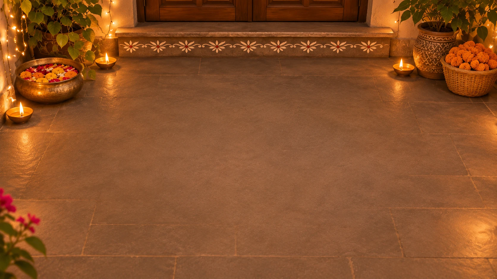
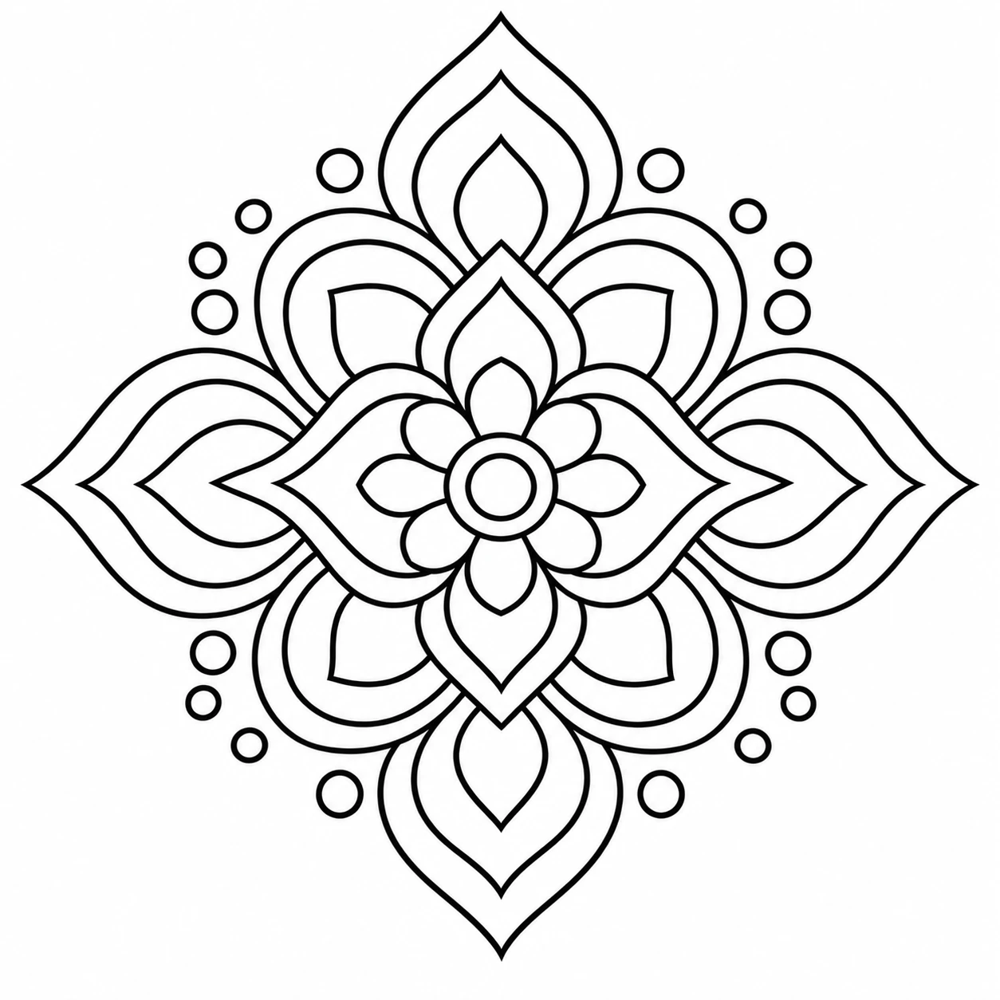
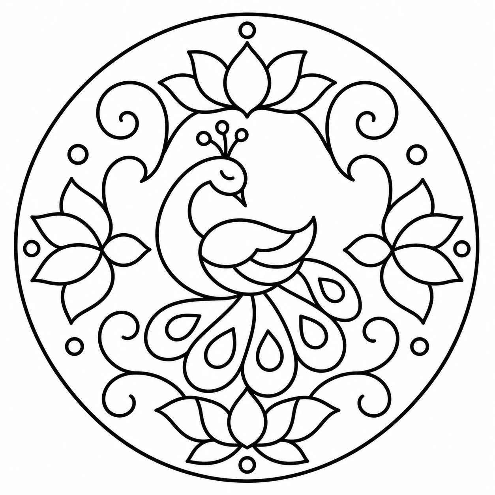
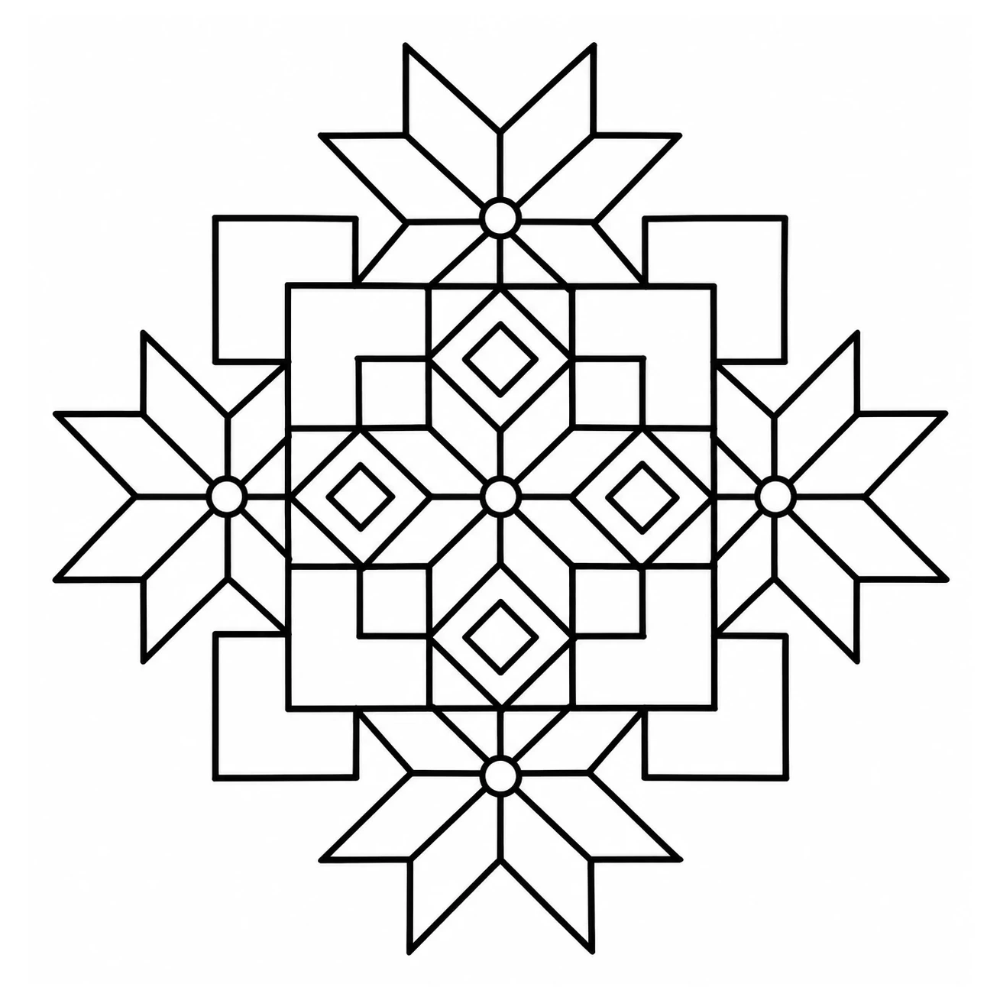

Tap a colour, then fill the rangoli
Draw in any quarter, the other three follow
Tap the rangoli to set a diya, tap one to lift it
or start from a template



Make your rangoli first, then light the diyas
Make your rangoli first, then colour it